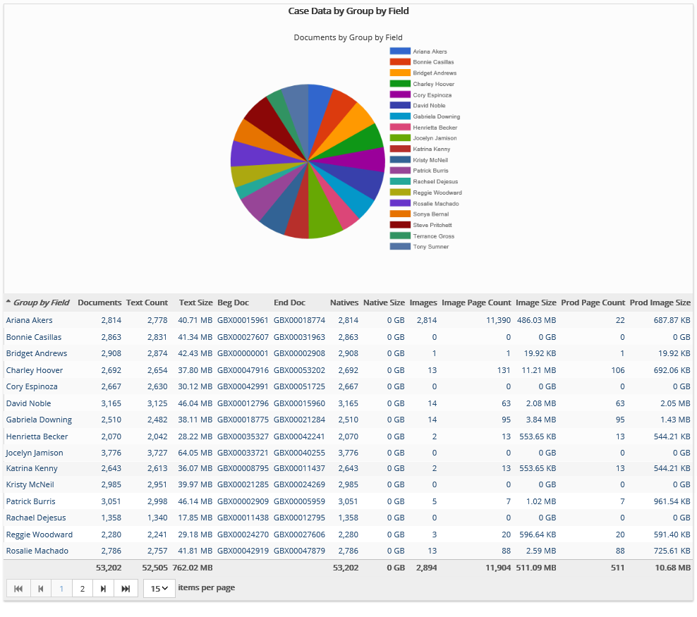

This report summarizes case size details such as number
and total size (in GB) of files (image, native, and text files). If documents
have been part of a production set, production size details also included.
Report can be based on any field defined in
Complete the following selections:
Report Title: A report title is selected by default; change the title if needed.
Field Definition: Select the field upon which the report should be organized.
